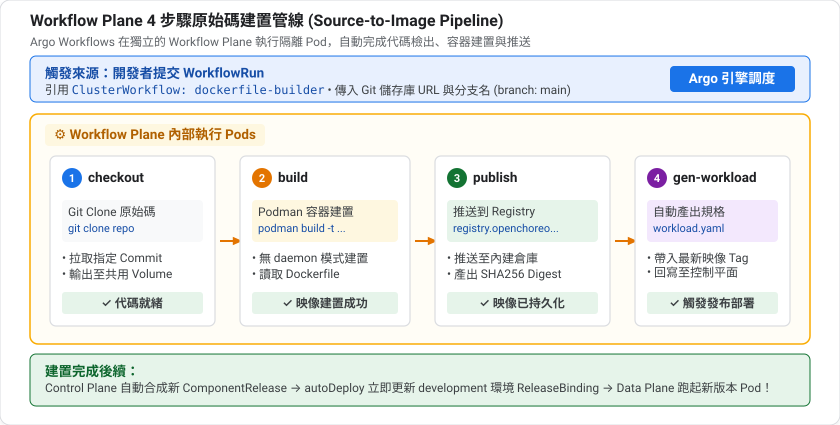
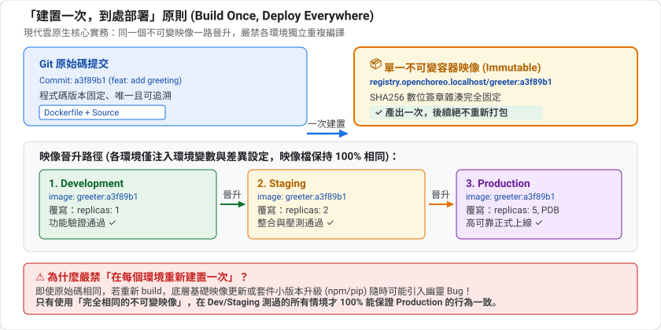
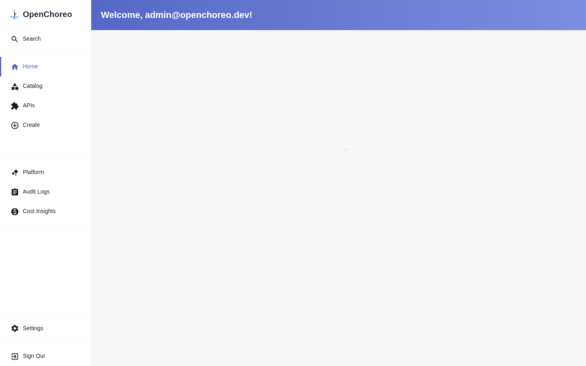
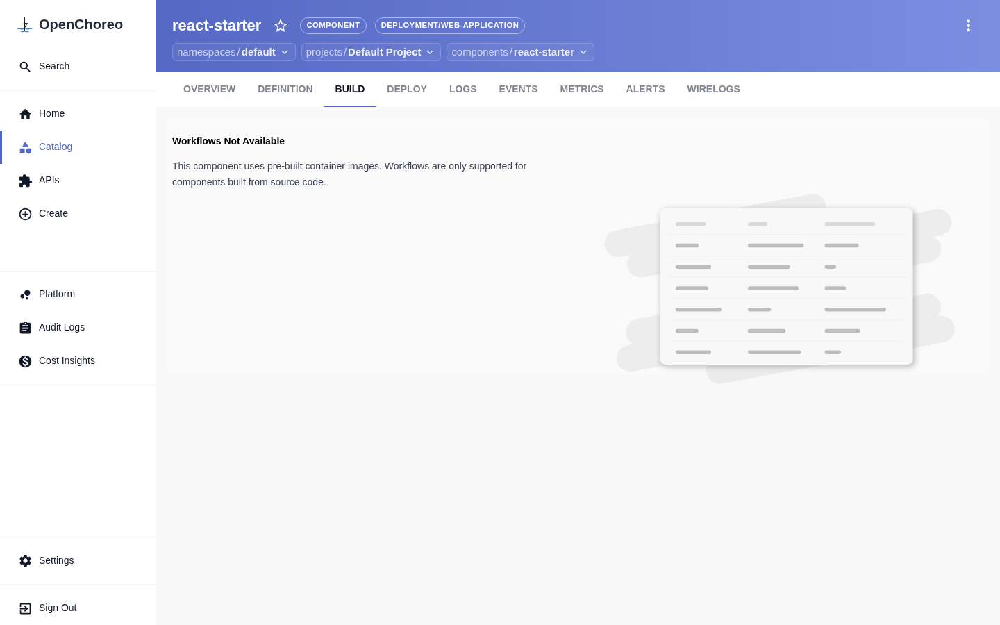
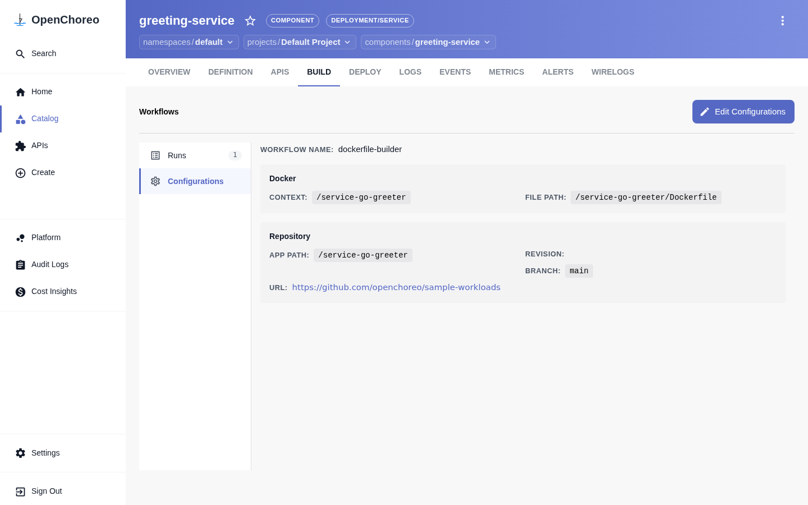
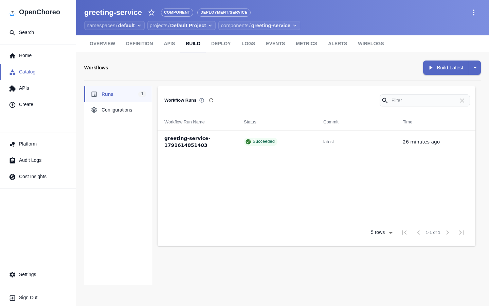
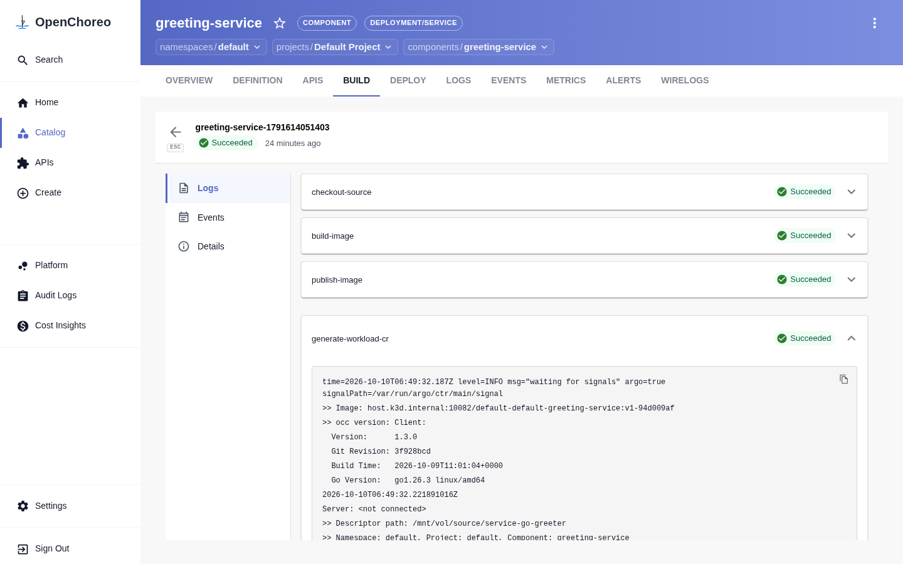
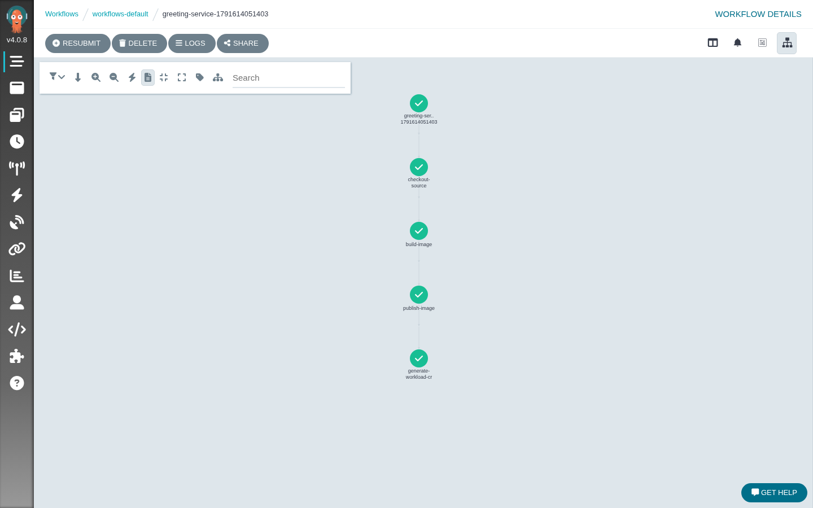
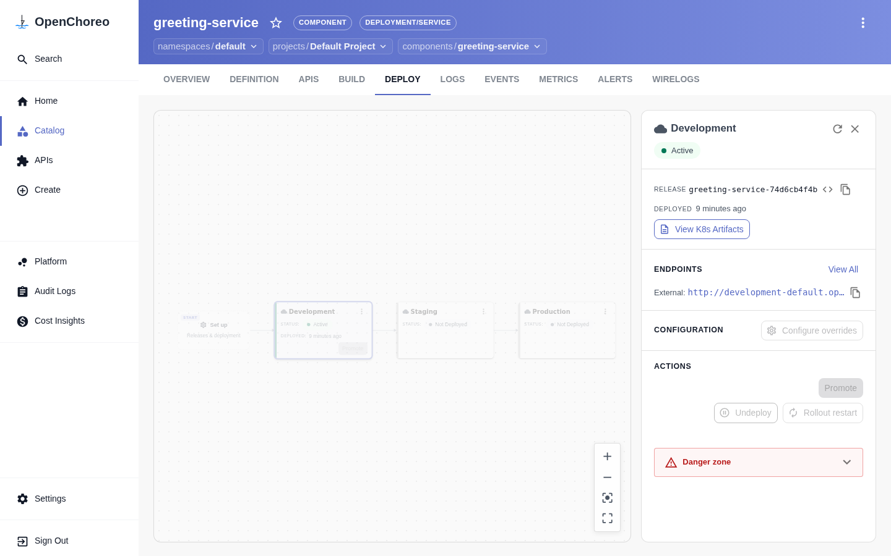
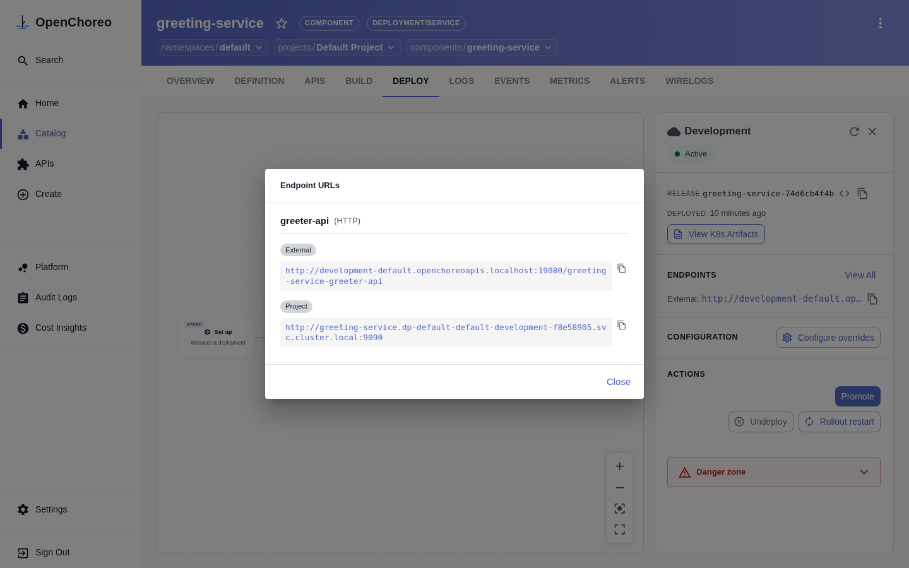

第 3 課部署的是預建映像。這一課要讓 OpenChoreo 自己從 Git 原始碼把映像建出來,這就是內建 CI/CD 的核心。
ghcr.ioworkflow 欄位與 WorkflowRun 的關係kubectl 與 Argo Workflows UI 觀察建置縮寫 | 全名 | 做什麼 |
CI | Continuous Integration(持續整合) | 程式碼一變動就自動:拉程式碼、編譯、測試、建置成映像 |
CD | Continuous Delivery/Deployment(持續交付/部署) | 把建好的成品自動(或半自動)送到各環境 |
本課是 CI 的部分:從 Git 原始碼產出可部署的映像。第 5 課和第 6 課是 CD 的部分。
名詞 | 說明 |
容器映像(image) | 一個打包好的唯讀檔案系統加啟動設定,是「可執行的成品」 |
Dockerfile | 一份食譜:從哪個基底映像開始、複製哪些檔案、執行哪些指令、啟動時跑什麼 |
建置脈絡(build context) | 建置時可以讀取的檔案範圍(本課的 |
Registry | 存放映像的倉庫,Kubernetes 從這裡拉取映像來跑 |
流程是:原始碼 + Dockerfile →(建置)→ 映像 →(推送)→ Registry →(拉取)→ Pod。
你當然也可以在自己的電腦或外部 CI 服務建置。讓平台內建的好處是:
建置要執行別人寫的程式碼與指令(Dockerfile 裡的 RUN),這比跑一個已經建好的服務風險更高,而且很吃 CPU、記憶體和磁碟。獨立出來有三個好處:
工具 | 角色 |
Argo Workflows | 在 Kubernetes 上執行「有順序的多步驟任務」的引擎。每個步驟是一個 Pod,步驟之間可傳遞輸出 |
Podman | 不需要常駐背景程式(daemon)的容器工具,適合在 Pod 裡建置映像 |
本課你會看到的四個步驟(checkout、build、publish、generate-workload),就是 Argo 的四個步驟,每一步一個 Pod。

如果熟悉程式設計,可以這樣理解:
OpenChoreo | 類比 |
ClusterWorkflow | 類別(class)或函式定義:規定參數 schema 與流程 |
WorkflowRun | 實例(instance)或一次函式呼叫:帶入實際參數執行一次 |
一個 Workflow 可以被不同元件、不同次數重複執行。
叢集預設提供多種建置器:
建置器 | 適用情境 |
| 專案已有 Dockerfile,想完全掌控 |
Buildpacks 系列(paketo、gcp、ballerina) | 沒有 Dockerfile,由工具偵測語言並自動產生映像 |
最重要的原則:同一個映像應該一路從 development 走到 production,而不是每個環境重建一次。因為重建可能得到不同的結果。這個原則是第 5 課的基礎。

準備好了就開始安裝 Workflow Plane。
Workflow Plane 是 OpenChoreo 專門跑「流程」的地方,負責 CI 建置、測試與平台定義的任務。它底層使用 Argo Workflows,並搭配一個本機用的 container registry。
在架構上,Workflow Plane 貫穿了從基礎設施註冊到不可變製品產出的五個抽象層次:
層次 | 核心 CRD / 組件 | 所在平面 | 職責與運作內容 |
1. 基礎設施層 |
| Control Plane | 向控制平面宣告工作流叢集、建立 |
2. 流程模板層 |
| Control Plane | 平台工程師定義的 CI 食譜,宣告參數 schema(Git URL、分支、Dockerfile 路徑)與轉譯邏輯。 |
3. 實例執行層 |
| Control Plane | 開發者發起的一次建置執行,綁定特定 Component 與 Project 標籤,帶入實際參數。 |
4. 任務執行層 |
| Workflow Plane | 底層工作流引擎將任務解構為 4 個獨立的 Kubernetes Pod 依序執行(每步一個 Pod)。 |
5. 製品倉庫層 |
| Workflow Plane | 儲存建置完成的容器映像,並由控制器封裝為不可變的 |
工作流平面透過 ClusterWorkflowPlane 向控制平面報到:
apiVersion: openchoreo.dev/v1alpha1
kind: ClusterWorkflowPlane
metadata:
name: default
spec:
planeID: default
clusterAgent:
clientCA:
value: "-----BEGIN CERTIFICATE-----\n...\n-----END CERTIFICATE-----"
secretStoreRef:
name: default
當工作流平面就緒後,在 OpenChoreo 控制台首頁可以直觀看到 Cluster Workflow Planes 點亮為綠色的 Connected 狀態:

在企業生產環境中,絕不能將 CI 建置與 Data Plane(正式線上服務)混在同一個節點,理由包含三大防禦維度:
RUN npm install、RUN curl | bash),具有潛在安全威脅。獨立在 Workflow Plane 可避免惡意指令橫向攻擊線上正式資料庫或業務 Pod。你的叢集在安裝時就已經預載了多種建置器,查看它們:
kubectl get clusterworkflow
預期看到 dockerfile-builder、paketo-buildpacks-builder、gcp-buildpacks-builder、ballerina-buildpack-builder。本課使用 dockerfile-builder,也就是用專案內的 Dockerfile 建置。
Positive : 開發者只需要填「Git 網址、分支、Dockerfile 路徑」這些參數,不用寫 CI 設定檔。要用什麼工具建置,是平台工程師透過 ClusterWorkflow 決定的。
Negative : 如果你是用第 1 課的 Quick Start 容器,只要在容器內執行 ./install.sh --version v1.3.1 --with-build 就完成了,可以直接跳到下一節。以下是在既有 k3d 叢集手動安裝的步驟,對應官方文件的 Step 6。
kubectl create namespace openchoreo-workflow-plane --dry-run=client -o yaml | kubectl apply -f -
CA_CRT=$(kubectl get secret cluster-gateway-ca \
-n openchoreo-control-plane -o jsonpath='{.data.ca\.crt}' | base64 -d)
kubectl create configmap cluster-gateway-ca \
--from-literal=ca.crt="$CA_CRT" \
-n openchoreo-workflow-plane --dry-run=client -o yaml | kubectl apply -f -
helm repo add twuni https://twuni.github.io/docker-registry.helm && helm repo update
helm upgrade --install registry twuni/docker-registry \
--namespace openchoreo-workflow-plane \
--create-namespace \
--values https://raw.githubusercontent.com/openchoreo/openchoreo/release-v1.3/install/k3d/single-cluster/values-registry.yaml
helm upgrade --install openchoreo-workflow-plane oci://ghcr.io/openchoreo/helm-charts/openchoreo-workflow-plane \
--version 1.3.1 \
--namespace openchoreo-workflow-plane \
--values https://raw.githubusercontent.com/openchoreo/openchoreo/release-v1.3/install/k3d/single-cluster/values-wp.yaml
這些是 Argo 的 ClusterWorkflowTemplate,定義每個建置步驟。在 k3d 上,發佈步驟會推到本機 registry host.k3d.internal:10082:
R=https://raw.githubusercontent.com/openchoreo/openchoreo/release-v1.3/samples/getting-started
kubectl apply \
-f $R/workflow-templates/checkout-source.yaml \
-f $R/workflow-templates.yaml \
-f $R/workflow-templates/publish-image-k3d.yaml \
-f $R/workflow-templates/generate-workload-k3d.yaml
等待 agent 憑證就緒,再建立 ClusterWorkflowPlane:
kubectl wait -n openchoreo-workflow-plane \
--for=condition=Ready certificate/cluster-agent-workflowplane-tls --timeout=120s
AGENT_CA=$(kubectl get secret cluster-agent-tls \
-n openchoreo-workflow-plane -o jsonpath='{.data.ca\.crt}' | base64 -d)
kubectl apply -f - <<EOF
apiVersion: openchoreo.dev/v1alpha1
kind: ClusterWorkflowPlane
metadata:
name: default
spec:
planeID: default
clusterAgent:
clientCA:
value: |
$(echo "$AGENT_CA" | sed 's/^/ /')
secretStoreRef:
name: default
EOF
kubectl get pods -n openchoreo-workflow-plane
kubectl get clusterworkflowplane
應該看到 argo-server、argo-workflow-controller、cluster-agent-workflowplane、registry 四個 Pod 都是 Running。
建立 greeting-service.yaml(取自官方 samples/from-source/services/go-docker-greeter):
apiVersion: openchoreo.dev/v1alpha1
kind: Component
metadata:
name: greeting-service
namespace: default
spec:
owner:
projectName: default
componentType:
kind: ClusterComponentType
name: deployment/service
autoDeploy: true
workflow:
kind: ClusterWorkflow
name: dockerfile-builder
parameters:
repository:
url: "https://github.com/openchoreo/sample-workloads"
revision:
branch: "main"
appPath: "/service-go-greeter"
docker:
context: "/service-go-greeter"
filePath: "/service-go-greeter/Dockerfile"
---
apiVersion: openchoreo.dev/v1alpha1
kind: WorkflowRun
metadata:
name: greeting-service-build-01
labels:
openchoreo.dev/project: "default"
openchoreo.dev/component: "greeting-service"
spec:
workflow:
kind: ClusterWorkflow
name: dockerfile-builder
parameters:
repository:
url: "https://github.com/openchoreo/sample-workloads"
revision:
branch: "main"
appPath: "/service-go-greeter"
docker:
context: "/service-go-greeter"
filePath: "/service-go-greeter/Dockerfile"
第 3 課(預建映像) | 第 4 課(從原始碼) |
手寫 Workload,指定 | 不寫 Workload,建置完成後自動產生 |
沒有 | Component 帶 |
沒有 WorkflowRun | 用 WorkflowRun 觸發一次建置 |
這個差異在 OpenChoreo Web 介面上有非常鮮明的體現：
在第 3 課中，由於 react-starter 與 my-greeter 都採用外部 Docker Registry 的既有映像，在控制台切換至 BUILD 分頁時，平台會直接提示 Workflows Not Available（如下圖），因為該元件不需要內部 CI 建置。

一旦元件 YAML 宣告了 spec.workflow（如本課的 greeting-service），OpenChoreo 的 BUILD 分頁就會被立即激活！點擊左側的 Configurations，平台會自動解析出 Git 來源網址、分支 (main)、Dockerfile 相對路徑以及建置脈絡，右上角亦提供 Edit Configurations 按鈕供隨時在介面上調整。

Positive : WorkflowRun 的 labels(openchoreo.dev/project、openchoreo.dev/component)把這次建置歸屬到某個 Component。建置成功後,平台據此把新映像接回該 Component。
kubectl apply -f greeting-service.yaml
你可以在命令列查詢 CR 狀態：
kubectl get workflowrun -n default
也可以直接切換到 OpenChoreo 控制台 greeting-service ➔ BUILD 分頁。平台會列出完整的 Workflow Runs 歷史清單：

kubectl apply 外，開發者隨時可以在網頁上一鍵觸發最新分支的建置。Succeeded 或藍色 Running）、關聯 commit 與建置耗時。點選表格中的任一筆 Run 紀錄，OpenChoreo 會進入專屬的管線執行詳情頁面 (/workflows/run/)：

開發者可以展開任一步驟的卡片（如 checkout-source、build-image、publish-image、generate-workload-cr），直接在瀏覽器即時閱讀終端日誌（包括 Podman 編譯輸出或平台產生 Workload CR 的過程），完全不需要下指令 kubectl logs。
kubectl get workflow -n workflows-default --watch
kubectl get pods -n workflows-default
開啟 http://localhost:10081（預設帳號密碼可略過或關閉歡迎提示），點選 workflows-default 命名空間下的工作流，可以看到圖形化渲染的完整有向無環圖 (DAG)：

步驟 | 作用 |
| 用 |
| 用 |
| 把映像推到本機 registry |
| 產生 Workload,把新映像接到 Component |
Negative : 第一次建置會比較久。build-image 需要拉取約數百 MB 的 podman-runner 映像,網路慢時 Pod 會停在 PodInitializing(實測在慢速網路下約 30 分鐘,在快速網路下通常幾分鐘)。可以用 kubectl describe pod -n workflows-default 看 Pulling image 事件確認是不是在下載。
等部署就緒:
kubectl wait --for=condition=available deployment \
-l openchoreo.dev/component=greeting-service -A --timeout=300s
查看 Release 與自動產生的 Workload:
kubectl get workload -n default
kubectl get componentrelease,releasebinding -n default | grep greeting
建置成功後，平台自動生成帶有唯讀映像 Hash 的 ComponentRelease（如 greeting-service-74d6cb4f4b），並根據 autoDeploy: true 自動發布到 Development 環境：

從 HTTPRoute 取出主機名稱與路徑前綴：
HOSTNAME=$(kubectl get httproute -A -l openchoreo.dev/component=greeting-service \
-o jsonpath='{.items[0].spec.hostnames[0]}')
PATH_PREFIX=$(kubectl get httproute -A -l openchoreo.dev/component=greeting-service \
-o jsonpath='{.items[0].spec.rules[0].matches[0].path.value}')
curl "http://${HOSTNAME}:19080${PATH_PREFIX}/greeter/greet"
預期輸出 Hello, Stranger!。
你也可以在 DEPLOY 介面點擊 Development 環境卡片上的 View Endpoints（或 View All），平台會彈出端點資訊視窗，清楚呈現自動配置的路由前綴：

複製其中的 External 網址，在瀏覽器中直接造訪：
http://development-default.openchoreoapis.localhost:19080/greeting-service-greeter-api/greeter/greet
瀏覽器順利呈現 Hello, Stranger!，驗證了從 Git 原始碼、平台自動建置、推送到 Registry、自動產生 Workload 到網關流量轉發的完整端到端自動化！
Positive : 這個範例的端點名稱是 greeter-api,所以路徑前綴是 /greeting-service-greeter-api,和第 3 課的 /my-greeter-http 不同。路徑前綴由 Workload 的端點名稱決定,因此腳本直接從 HTTPRoute 讀取最保險。
建置步驟全部 Completed,但 kubectl describe pod 出現:
failed to resolve reference "host.k3d.internal:10082/...": lookup host.k3d.internal: no such host
原因:建置 Pod 透過 CoreDNS 能解析 host.k3d.internal,所以推送成功;但節點本身的 containerd 讀的是節點的 /etc/hosts,若節點容器重啟過,k3d 注入的這一行可能消失。
檢查並補回(把 IP 換成你的 docker network 閘道):
NODE=k3d-openchoreo-server-0
docker exec $NODE cat /etc/hosts | grep host.k3d.internal
GW=$(docker network inspect k3d-openchoreo --format '{{(index .IPAM.Config 0).Gateway}}')
docker exec $NODE sh -c "grep -q host.k3d.internal /etc/hosts || echo '$GW host.k3d.internal' >> /etc/hosts"
kubectl delete pod -n dp-default-default-development-f8e58905 -l openchoreo.dev/component=greeting-service
Negative : 這個修正在節點容器再次重啟後會消失。用第 1 課的 Quick Start 容器安裝的環境通常不會遇到。
kubectl delete -f greeting-service.yaml
Workflow Plane 可以保留,後面的課程還會用到。
試著不看上文回答下面的問題;答不出來的,回頭看對應的章節。
lookup host.k3d.internal: no such host,原因與修法?/etc/hosts 缺少 host.k3d.internal,建置 Pod 走 CoreDNS 能解析所以推送成功,但節點 containerd 解析不到。把閘道 IP 補回節點 /etc/hosts 後重建 Pod。你已經:
05:多環境與 Promotion — 把同一個 Release 從 development 晉升到 staging、production。